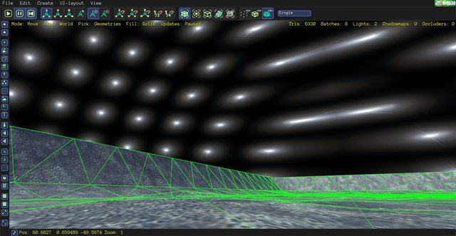

rasteron
Hey guys,
I’m trying to create a skydome material/shader and so the first I did was to derive from skybox and some changes so here’s my current shader wip. I was wondering what is the equivalent for position, projectionMatrix and modelViewMatrix in Urho3D.
Using the dome model, this works in glsl but the texture is sort of tiled:
varying vec2 vTexCoord;
void VS()
{
mat4 modelMatrix = iModelMatrix;
vec3 worldPos = GetWorldPos(modelMatrix);
gl_Position = GetClipPos(worldPos);
gl_Position.z = gl_Position.w;
vTexCoord = iPos.xy;
}
void PS()
{
vec4 sample = texture2D(sDiffMap, vTexCoord);
gl_FragColor = vec4(sample.xyz, sample.w);
}